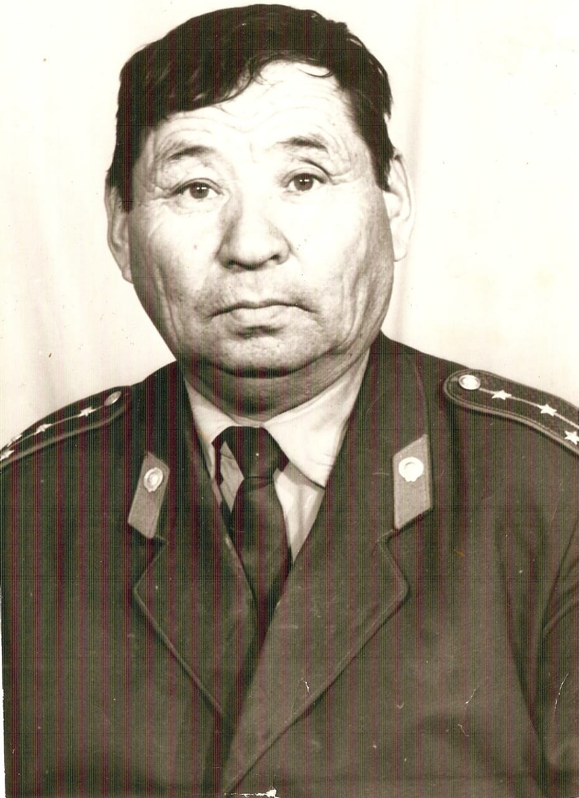

Наш дед Усманов Умар Имаш-улы, родился он и вырос, по словам Даулет-аже (его матери) в 1925-м году в городе Ходжейли. Но, когда 1941-ом началась Отечественная война, он видел как шел набор всех мужчин старше 18-ти лет, а ему в тот год было всего 16 лет.
На следующий год он пришел в Ходжейлинский районный Военкомат и, чтобы его взяли на войну, назвал дату рождения- 1924год и таким путем, 25 апреля 1942-го года попал в центр подготовки стрелков, курсантом военно-орловского пехотного училища гор. Чарджоу ТССР, а затем направлен на передовые войска Красной Армии.
В Рядах Коммунистической Красной Армии с 15.05.1942 года.
Свои первые боевые действия начал 15-го мая 1942 года с Брянского фронта, на Орловской области, недалеко от поселка Становая, где после кровопролитных боев противник был отброшен назад с большими численными их потерями. Затем данное направление фронта была переформирована и переименована на 1-й Белорусский фронт.
Место службы: 497-й артеллерийский полк, 269-ая стрелковая дивизия 1-го Беларусского Фронта, затем 2-го Беларусского Фронта Рогачевской Краснознаменной дивизии, ( старшим разведчиком наблюдателем, затем Командиром отделения разведки 8-й батареи 41-го стрелкового корпуса.)
Его боевые награды говорят о его героических поступках, смелости, отваге и военной смекалке в нелегких ситуациях в период кровавых боев и осады противника.
Свою первую награду медаль « За боевые заслуги» дедушка получил за то, что в период наступательных боев с 04-го по 06.01.44 года своевременно обнаружил наблюдательный пункт и 3 пулеметных точек противника, которые были подавлены огнем нашей артиллерии, что способствовало продвижению нашей пехоты.
Следующая награда -медаль « За отвагу», за то, что он обнаружил 4 пулеметных точек противника и 1 противотанковое орудие, которые были уничтожены огнем нашей артиллерии, что способствовало продвижению вперед нашей пехоты.
Правительственная награда- Орден «Красная звезда» была присвоена за три его героические действия, в том числе,- когда при прорыве обороны противника на реке Друть, 24.06.44 года, была сильно побита кабельная линия, осколком повреждена радиостанция, срочно требовался огонь артиллерии на уничтожение огневых точек противника.
Рискуя жизнью мой дед Усманов Умар, под артиллерийским и пулеметным огнем противника вплавь через реку понес письменное донесение командиру дивизиона, которое доставлено в срок. На обратном пути восстановил 3 повреждения линии связи.
После артиллерийской подготовки наших войск, оживились некоторые огневые средства противника, мешающие продвижению нашей пехоты.
Мой дед Усманов Умар, находясь в передовых рядах наступающей пехоты, своим безошибочным методом наблюдения обнаружил 3 станковых пулемета и одно орудие, стоящее прямой наводкой на наши войка. Точное целеуказание огневых средств противника командиру батареи помогли огнем нашей артиллерии уничтожить их, что способствовало продвижению вперед нашей пехоты.
Вторым Орденом «Красная звезда» №114-н от 01.10.44 года дедушка награжден за боевые поступки во 2-м Беларусском фронте, когда с очередной ночной разведки один взял поодиночке в плен 13 немцев в том числе один майор, перевязав их цепочкой привел в наш штаб-блиндаж и приставлен к награде приказом командира дивизии, генерал-майором Н.Кубасовым.